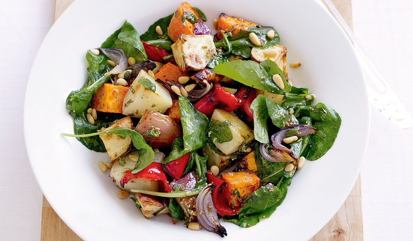
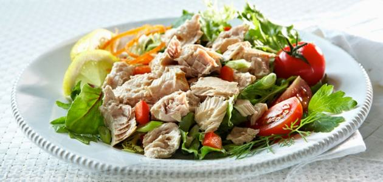
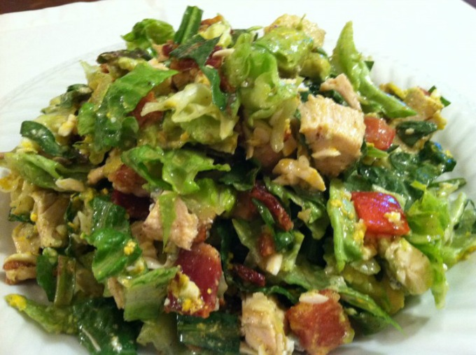
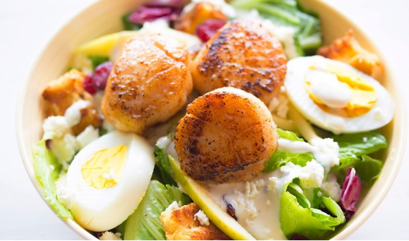

PREDJELA
Hladna salata može da bude odličan izbor za ručak onda kada ste na dijeti, generalno vodite računa o ishrani, ili kada su topli letnji dani pa nam neka teška i topla hrana manje prija... Obrok salata, sa pravilno iskombinovanim sastojcima i punim ukusom, zaista može da zameni ručak...
Najčešće se priprema sa dosta svežeg povrća, što je čini najzdravijom. Zašto?- Zato što bi trebalo da svakodnevno unosimo dovoljne količine nutrijenata iz svežeg povrća. Povrću se termičkom obradom oduzima veliki deo tih nutrijenata, zbog kojih bi i trebalo da ga konzumiramo..
Zbog toga se trudite da uz svaki obrok jedete sveže povrće, odnosno voće ako je obrok sladak. Gotovo sve sveže (jestive) biljke pogodne su za naš organizam, hrane ga i opskrbljuju esencijalnim nutrijentima (vitamini, minerali, vlakna, proteini, masne kiseline...).
Hladne salate se pripremaju lako, gotove su za manje od pola sata, a ukus je, ako na pravi način iskombinujete sastojke, odličan.
U nastavku pogledajte nekoliko recepata za zdrave i ukusne hladne salate, koje možete poslužiti i kao obrok, i vama i deci, ali i kao meze gostima, kao večeru,...
|  |  | |
| DIJETALNA CEZAR SALATA | HLADNA SALATA OD TUNE | |
|  |  | |
| HLADNA SALATA SA PILETINOM | HLADNA SALATA SA KUVANIM JAJIMA |